Notation
Die Notation ist aus der Perspektive der direkten draufsicht zu verstehen.
Die Rubik's Cube Notation beschreibt Drehungen von der
jeweiligen Draufsicht auf die genannte Seite,
wobei Großbuchstaben für Seiten (U, D, F, B, R, L), ein Apostroph (') für eine Drehung gegen den Uhrzeigersinn
und eine `2` für eine 180°-Drehung stehen.
x, y, z steht für die Rotation des gesamten Würfels um die
jeweilige Achse.
- F: Die Vorderseite um 90° im Uhrzeigersinn drehen.
- R': Die rechte Seite aus der Draufsicht um 90° gegen den Uhrzeigersinn drehen (also zu dir her / nach unten).
- U2: Die oberste Schicht um 180° drehen (Richtung egal).
- B: Die Hinterseite um 90° im Uhrzeigersinn drehen (wenn du direkt von hinten auf die Seite schauen würdest).
- L': Die linke Seite aus der Draufsicht um 90° gegen den Uhrzeigersinn drehen (also von dir weg / nach oben).
- y ist eine Drehung des ganzen Würfels nach links, also in U Richtung. y' wäre eine Drehung des gesamten Würfels nach rechts.
- x ist eine Drehung des ganzen Würfels nach oben, also in R Richtung. x' wäre eine Drehung des gesamten Würfels nach unten.
Beginner Anleitung
Einsteigerfreundliche Anleitung
1. Weißes Kreuz
Das Kreuz lässt sich immer in maximal 8, meistens aber 6 Zügen lösen.
2. Weiße Ecken
Gelbe Seite nach oben drehen. Ecke oberhalb der Zielecke drehen dann folgenen Algorithmus.
3. Mittlere Ebene
Die Kanten der weißen Seite am passenden Mittelstein ausrichten und je nachdem auf welche Seite die Kante soll einen der folgenden Algorithmen. y steht dabei für eine Drehung des gesamten Würfels nach links (y) oder rechts (y').
Kante muss nach links
Kante muss nach rechts
4. Gelbes Kreuz
Es gibt drei Fälle. Nur Mittelstück, Linie oder Ecke. Für eine optimale Lösung siehte Kanten ausrichten / gelbes Kreuz im Abschnitt OLL in zwei Schritten.
Punkt oder Linie
Ecke
5. Gelbe Kanten
Obere Ebene so lange drehen bis 2 Kanten mit den Mittelstücken übereinstimmen. Wenn die Kanten gegenüber liegen eine der beiden nach vorne halten. Wenn die Kanten nebeneinander liegen die Kanten nach hinten rechts.
6. Gelbe Ecken platzieren
Ecke vorne links platzieren
7. Gelbe Ecken drehen
Weiße Seite nach oben halten und verdrehte Ecken nach unten rechts halten. Dann den Algorithmus so lange wiederholen bis die Ecke stimmt. Anschließend die unterste Ebene zur nächsten Ecke weiterdrehen und den Algorithmus wiederholen.
CFOP - Methode
1. Weißes Kreuz
Erster Schritt: Weißes Kreuz auf der Unterseite lösen. Kanten müssen zu den Seiten-Mittelstücken passen.
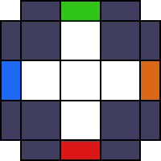
Weißes Kreuz
Das Kreuz lässt sich immer in maximal 8, meistens aber 6 Zügen lösen.
2. F2L - First 2 Layers
Gleichzeitiges Lösen der ersten beiden Schichten durch das Verbinden von Eck- und Kantenpaaren.
Youtube Anleitung für intuitives F2L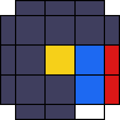
Grundfall 1: Paar bereits verbunden
Ecke und Kante sind richtig zusammengesetzt. Die Ecke steht über der Stelle in der sie eingefügt werden soll. Paar einfügen: U' R U R'
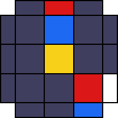
Grundfall 2: Getrennte Steine
Ecke über Zielposition drehen. So drehen, dass die weiße Seite noch sichtbar ist (U/U'). Ecke nach unten drehen (F'/R). Wenn die Kante oben die gleiche Farbe hat wie die Ecke dann die Kante neben die Ecke, sonst gegenüber der Ecke drehen. Ecke wieder hoch drehen (F/R). Ecke wieder über Ziel drehen (U/U'). Paar bilden und einfügen siehe Grundfall 1.
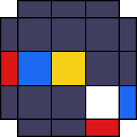
Grundfall 3: Weiß zeigt nach oben
Kante über Mittelstück drehen. Kante von der Zielposition nach unten wegdrehen. Ecke über die Kante drehen um das Paar zu bilden. Paar einfügen siehe Grundfall 1.
3. OLL in zwei Schritten
Gelbe Oberseite lösen in zwei Teilschritten: Ecken orientieren und Kanten orientieren.
Kanten ausrichten / gelbes Kreuz
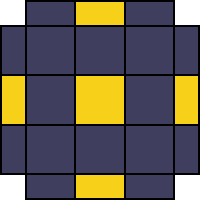
Punkt (Dot)
Keine Kante gelb. Ecken können bereits gelöst sein.
f (R U R' U') f'
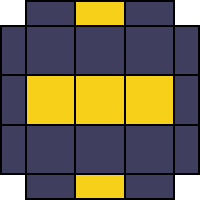
Linie (Line)
2 gelbe Kanten gegenüber. Waagerecht halten (links nach rechts).

Winkel (L-Shape)
2 gelbe Kanten nebeneinander. Nach hinten und links ausrichten.
Ecken ausrichten / orientieren

Car (H)
0 Ecken gelb. Scheinwerfer vorne UND hinten.

Blinker (Pi)
0 Ecken gelb. Scheinwerfer links, Außensticker oben & unten.
F (R U R' U') F'

Headlights (U)
Hinten fehlen die Ecken. Scheinwerfer nach hinten
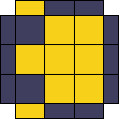
Chameleon (T)
Links oben und unten fehlen die Ecke / sind nach oben und unten gerichtet.
F R F'

Sune (Fish)
1 Ecke gelb oben (unten links). Gelber Sticker schaut nach vorne rechts.

Anti-Sune (Anti-Fish)
1 Ecke gelb oben (oben rechts). Gelber Sticker schaut nach vorne.

Bowtie (L)
2 Ecken diagonal gelb oben. Gelbe Ecke zeigt nach vorne-links.
4. PLL in zwei Schritten
Letzter Schritt: Steine an die richtige Position verschieben. Erst Ecken, dann Kanten.
Ecken ausrichten
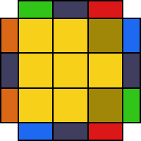
Benachbarter Tausch (T-Perm)
Korrekte Ecken nach links halten.
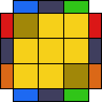
Diagonaler Tausch (Y-Perm)
Zu tauschende Ecken oben links und unten rechts halten.
(R U R' U') (R' F R F')
Kanten ausrichten
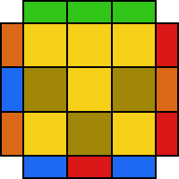
Ua-Perm
Kanten tauschen gegen den Uhrzeigersinn. Fertige Seite nach hinten. Gleich wie Ub-Perm nur gegen Uhrzeigersinn (U).
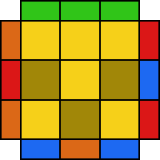
Ub-Perm
Kanten tauschen im Uhrzeigersinn. Fertige Seite nach hinten. Gleich wie Ua-Perm nur im Uhrzeigersinn (U').
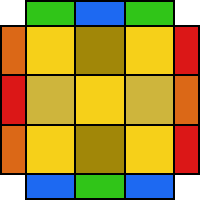
H-Perm
Tauscht alle Kanten gegenüber (Vorne/Hinten und Links/Rechts).
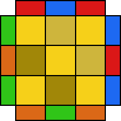
Z-Perm
Tauscht benachbarte Kanten über Kreuz (Vorne/Rechts und Hinten/Links).
U2 M2